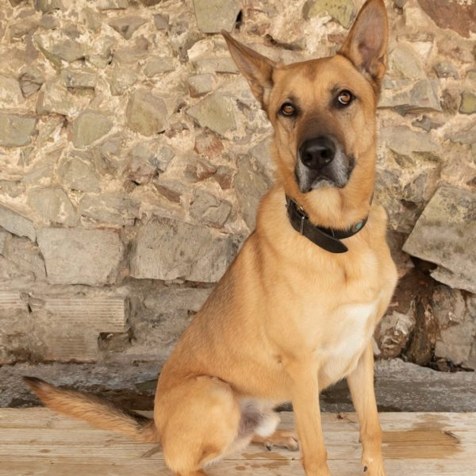

Horus
- Edat: 3 anys
- Raça: Pastor alemany
- Condició: Necessita un lloc gran
A Horus li encanta jugar i fer passejades tranquil·les,
i és molt afectuós amb les persones que coneix. Tot i això,
és desconfiat amb desconeguts i necessita una família que tingui
paciència per conèixer-lo i ajudar-lo en la seva adaptació.
Neo
- Edat: 7 anys
- Raça: Mestís
- Condició: Marcat per l'abandó
La vida de Neo prèvia a la protectora no va ser la millor que va
poder tenir. Vivia sense relacionar-se amb altres gossos ni amb persones
i amb problemes de salut sense tractar durant molt de temps que li
generaven un dolor i un malestar que feia que li costés més deixar-se
ajudar. Tot això ho feia desconfiar de qualsevol que se li apropés, ja
fos gos o humà. Ell simplement no sabia com s'havia de fer.

Ona
- Edat: 5 anys
- Raça: Pitbull
- Condició: La família de l'Ona no podía seguir amb ella i per això va
arribar a la protectora a la recerca d'una nova oportunitat
Ona és una gosseta molt afectuosa amb la gent. Amb els gossos no
interactua gaire. És una gosseta amb molta energia i necessita que
li cobreixin bé les necessitats de passejades per estar bé.
Ona no porta bé estar al refugi, per la qual cosa esperem que no trigui
a trobar una llar adequada.

Troya
- Edat: 1 any
- Raça: Bodeguera
- Condició: Buscant una familia
Troya és nascuda el juny de 2022. Va ser trobada abandonada a la
sort. Troya és una gosseta sociable, afectuosa,simpàtica que espera
amb ànsies poder trobar una llar on ser estimada i cuidada com es
mereix.
Henar
- Edat: 6 messos
- Raça: x Bodeguera
- Condició: Junt a Oda
Henar és aquesta mestissa de Bodeguera nascuda al maig de 2023.
Ella i la seva germana Oda van ser trobades abandonades sent molt
petites. Són dues gossetes que es poden mostrar tímides en un primer
moment i que encara segueixen tenint por a les coses noves i al carrer,
per això, busquem per a elles una família que visqui en un entorn
tranquil, amb experiència i paciència a tractar amb gossos porucs .
Oda i Henar es donen en adopció conjunta o per separat si és amb famílies
que ja tinguin un altre gos.
Oda
- Edat: 6 messos
- Raça: x Bodeguera
- Condició: Junt a Henar
Oda és aquesta mestissa de Bodeguera nascuda al maig de 2023.
Ella i la seva germana Oda van ser trobades abandonades sent molt
petites. Són dues gossetes que es poden mostrar tímides en un primer
moment i que encara segueixen tenint por a les coses noves i al carrer,
per això, busquem per a elles una família que visqui en un entorn
tranquil, amb experiència i paciència a tractar amb gossos porucs .
Oda i Henar es donen en adopció conjunta o per separat si és amb famílies
que ja tinguin un altre gos.
Drako
- Edat: 1 any
- Raça: Pastor alemany
- Condició: Tornar a confiar
Aquest gos encara que tingui un bon físic és un gos tranquil i que
pot viure en un pis sense problemes. Ja que el propietari del pis on
viuen actualment no l'hi deixava tenir a casa. Li ha costat una mica
adaptar-se al canvi, però ara ja està a punt per trobar una família
nova. Per a Drako busquem algú que pugui fer un gran vincle amb ell ja
que és un gos molt sensible i aferrat que té molt d'amor per donar.
Marley
- Edat: 5 anys
- Raça: American Staffordshire Terrier
- Condició: Una casa per sempre
Un gosset encantador que ha arribat al refugi perquè la seva família
ja no podia continuar fent-se'n càrrec. És un gosset molt simpàtic amb
les persones i que necessita una nova llar on trobar l'estabilitat que
necessita. A Marley li encanta sortir a passejar, i el que més li
agrada és rebre moltes manyagues i afecte, és un gosset molt amorós.
Idealment busquem per a ell una llar sense més gossets.

Cross
- Edat: 1 any
- Raça: Pastor alemany
- Condició: Jove i amb energia
Cross és un gosset jove i actiu, que va arribar al refugi perquè la
família que el tenia no disposava de temps per atendre'l. Cross no ha
tingut gaire sort fins ara, sent tan jove a més d'haver patit
l'abandonament ja ha passat per una cirurgia a causa d'una luxació del
tars-metatarsià, però avui ja està gairebé recuperat. Cross necessita
una família amb què compartir aventures i que estigui disposada a
donar-li l'oportunitat de tenir una bona llar per a la resta de la seva
vida.